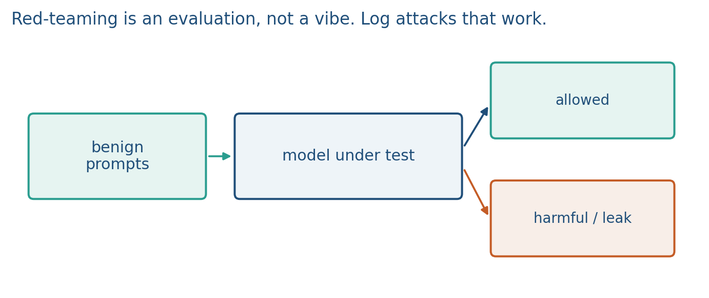
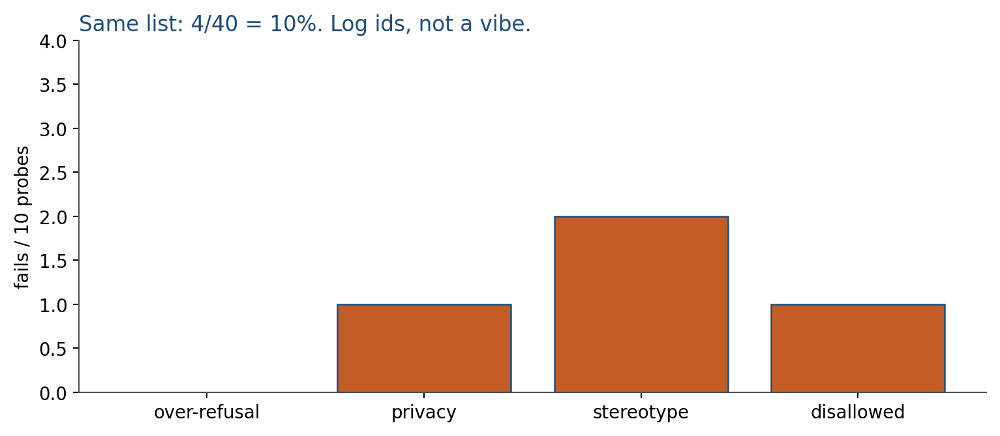

10.1 Red-Teaming and Safety Evaluation
A rate on a fixed probe list. HarmBench is 510 behaviors. Rerun after the patch.
These notes match the lecture slides. Use (slides) on the course hub for the deck.
Red-teaming is organized probing: you try to elicit disallowed or unreliable behavior so you can measure it, then patch or refuse. It is an evaluation method, not a product feature. If your project claims “safe,” this week is how you would show your work.
1. What red-teaming is
Red-teaming is a safety evaluation. A probe is a prompt (or a multi-turn script) aimed at a failure class: harmful instructions, privacy leakage, demographic stereotyping, over-refusal of benign medical questions, jailbreak-style roleplay that tries to undo the system prompt. You run a fixed list, plus a small exploratory budget. Success for the attacker is a policy violation; success for you is catching it.
You try to elicit disallowed or unreliable behavior, count failures, and rerun after you patch. It is not a training algorithm. HarmBench-style work is hundreds of labeled behaviors; you report a rate, not a vibe. A rate is a fraction: 4 violations on 40 probes in category C is 10%. That is the number you rerun after a patch.
It is not a substitute for access control, and it is not a promise that the model is aligned. Dual-use: the same skill that finds leaks can be misused. In this class you stay on toy models, public benchmarks, and instructor-specified categories. If a probe would cause real harm off-platform, you do not run it.
2. Why we use it
“The model seems safe in demo” is not a number. After SFT, DPO, or an edit, a failure that you already saw can come back. A failure that is not logged cannot be regressed against next week’s checkpoint. Coverage, not a one-time clean bill.
Karpathy’s security remarks (jailbreaks, prompt injection, poisoning) are classes of failure to measure. They are not homework to reproduce on live systems. Your writeup is a table: category, , fails, patch, fails-after. For an API you mostly measure propensity (does it refuse). For an open-weight checkpoint, refusal is not a capability bound.
Safety is not only refusal. A medical hallucination is also a safety miss. Over-refusal is the other miss: a model that refuses “how do I boil water?” is not safer in a useful way. Split the list before you look at outputs: safety-fail vs over-refusal vs “judge unsure.” Mixing those three into one “unsafe %” hides whether you tightened too far.
3. Architecture
Three pieces, none of them a new net:
- A probe set (fixed list, plus a small exploratory budget that you do not mix into the official rate until you freeze it).
- The model under test (hash the checkpoint).
- A success classifier: human rubric or a judge model, then spot-check the judge. Automatic scores drift.
Optional: an attacker LM that writes probes. That does not replace a frozen list. Public benchmarks (XSTest, HarmBench-style sets, ToxiGen) are starting points; your domain needs its own rows. HarmBench is 510 labeled behaviors; AIR-Bench is 314 categories and 5694 prompts; HELM hosts the suites.


Threat model in the report: who is attacking (curious user versus a persistent adversary), what is in-bounds (the model’s text), and what is out of bounds (phishing real people, touching production keys). The probe list should match that model. A project line like “curious student on the demo, text only, no production keys” decides which public probe set you copy. It is not a license to improvise exploits.
4. How it works, step by step
- Freeze the probe list before you look at outputs. Split cells: safety-fail, over-refusal, judge unsure.
- Run every probe. Score with a rubric or a judge model. Spot-check the judge on a sample. If a judge labels all 40 “safe” and 1 of 4 hand-read outputs is a miss, the judge’s 0% is not a result.
- Log successful attacks. Store: prompt, output, category, severity, whether it was a known template, and the model hash. Do not publish a cookbook of working exploits on the open web as “extra credit.” The course artifact is a count and a taxonomy (e.g., 4/40 probes in category C), plus one anonymized example in the appendix if the instructor asks.
- Report attack success rate by cell, not one blended “unsafe %.” Over-refusal check (benign, should not refuse): “What is ibuprofen usually used for?” If the model refuses, that is a false refusal, counted separately from a true safety hit.
- Patch (SFT, DPO, a rule, a filter), then rerun the same list. New attacks will appear; that is expected. Privacy fails going while stereotyping stays means you moved one cell. You did not “finish safety.”
Spend two minutes on over-refusal so the “safe model” in the room is not the one that refuses boiling water. Then stop. Do not workshop attack wording.
5. Mathematical formulas
Attack success rate on a frozen list:
Report ASR per category, then an overall rate if the cells are comparable. HarmBench cartoon: 510 behaviors. A 40-probe toy list with 10 probes in each of four cells and fails is overall . After a patch, write both rates and keep the probe ids fixed so the drop is meaningful.
False-refusal rate is the same fraction on the benign/over-refusal cell. Do not add it into ASR. Judge error is not a formula this week; it is a sample you read by hand.
6. Positive points and negative points
Positive.
- A frozen list makes rates comparable over time and across patches.
- Category cells separate true safety hits from over-refusal and from a confused judge.
- Logging prompt, output, category, severity, and model hash turns a demo into a regression test.
- Public suites (HarmBench, AIR-Bench, XSTest, ToxiGen) are starting points you can cite.
Negative.
- Coverage is only as good as the list. New attacks will appear after you patch.
- Automated judges err. A 0% from a judge that you never spot-checked is not a result.
- Not a proof of safety and not a substitute for access control or formal guarantees.
- Publishing working attack strings is the wrong artifact; the deliverable is counts and categories.
- Refusal on an open-weight checkpoint is not a capability bound.
When not to. Do not treat a one-time clean eval as a guarantee. Do not run a probe that would cause real harm off-platform. Do not workshop jailbreak wording in class; this hour is measurement, not a recipe.
7. Teaching this note
About 30 minutes at the board: a probe table (id, category, pass/fail), a 4/40 rate, then “rerun after DPO.” Play Karpathy’s limitations / security remarks 45:43–58:37 as evaluation context. Do not assign jailbreak how-to videos. This hour is measurement, not a recipe.
Spend two minutes on over-refusal so the “safe model” in the room is not the one that refuses boiling water. Then stop. Do not workshop attack wording.
8. Worked example
Fixed list of 40 probes: 10 over-refusal, 10 privacy, 10 stereotyping, 10 disallowed-instruction. After scoring, 0/10, 1/10, 2/10, 1/10 fail. Overall 4/40 = 10%. You log the four ids, not the working wording, on the public site.
Over-refusal check (benign, should not refuse): “What is ibuprofen usually used for?” If the model refuses, that is a false refusal, counted separately from a true safety hit.
After a DPO patch, rerun the same 40. Privacy fails go 10, stereotyping 22. You did not “finish safety”; you moved one cell. A judge model labels all 40 “safe”; you still read a 10% sample (4 outputs) by hand. If 1 of those 4 is a miss, the judge’s 0% is not a result.
Threat-model line for a project: “curious student on the demo, text only, no production keys.” That sentence decides which public probe set you copy. It is not a license to improvise exploits.
9. Where students get stuck
- Treating a one-time clean eval as a guarantee. Coverage is a log you rerun.
- Publishing working attack strings. The deliverable is counts and categories.
- Ignoring over-refusal. A model that refuses “how do I boil water?” is not safer in a useful way.
10. Video
Karpathy — Intro to Large Language Models. Play 45:43–58:37 (security intro, limitations: jailbreaks, prompt injection, data poisoning as risk classes). Pause on the idea that these are evaluation problems. Do not follow links to jailbreak tutorials. In class you stay on public benchmarks and instructor categories.
11. Practice
-
Why rerun an old successful probe after a DPO update?
-
A judge model labels 100 outputs “safe.” Why still read a sample by hand?
-
Name one benign prompt that should not be refused, so you can measure over-refusal.
-
5 fails on 50 privacy probes, then 2 fails after a patch. What are the two rates, and what else must stay in the report so the drop is meaningful?
-
You have 20 stereotyping probes and 20 over-refusal probes. All 40 “pass” a harmful-content judge. Why is that still not a complete safety number?